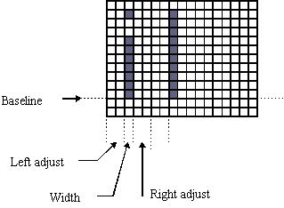
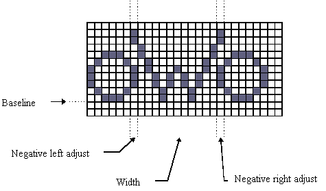

|
| |
The width of a character, the move and the left and right adjusts are related by the following formula:
move = width + left adjust + right adjust
Drawing on the device consists of a number of distinct phases:
From the specified device position move left-adjust pixels (positive moves right, negative moves left).
Display the relevant character.
Move right-adjust pixels from the right-hand side of the character displayed (positive moves right, negative moves left).
The overall distance moved is move pixels.
The character width (in pixels) is then: move - left-adjust - right-adjust

Width, move and adjusts of a character
Using a proportional font, the left adjust and right adjust may be negative for certain character sequences to achieve kerning.
For example, for the capital ‘W’ in the string ‘oWo’:

Kerning using negative adjusts
Copyright ©2002 Symbian Ltd. 6.1-00174 |
|